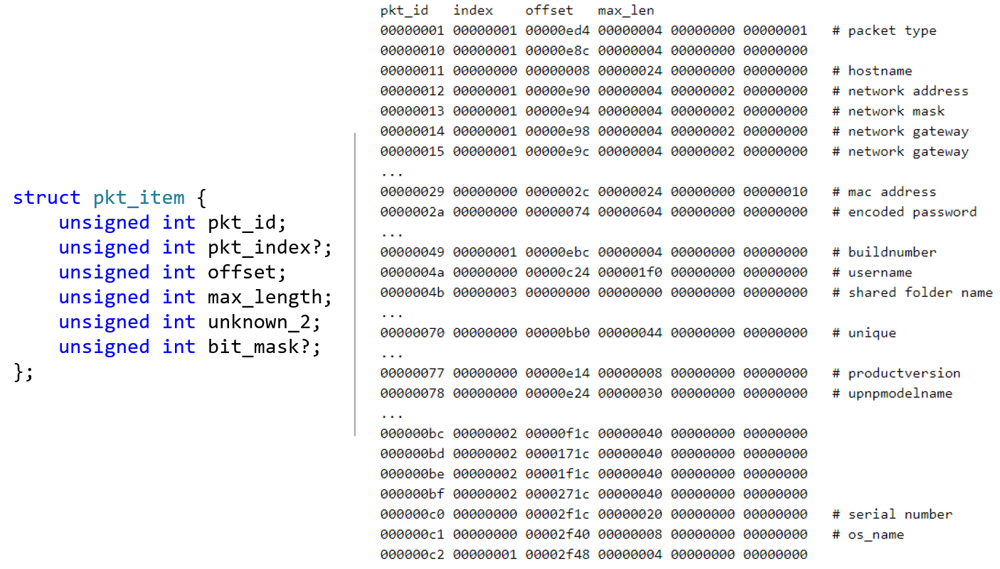
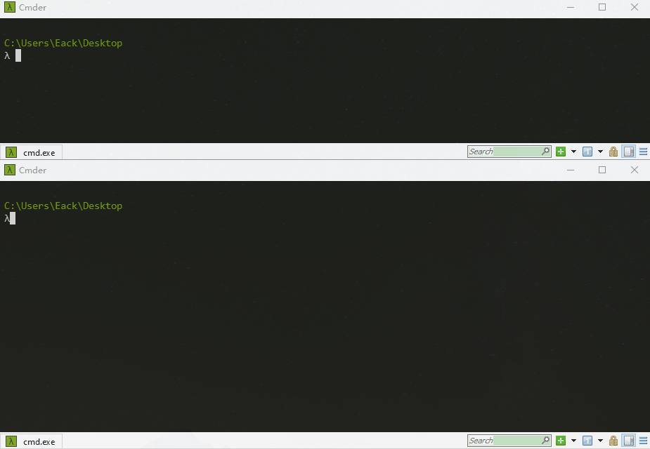

Patch diff an old vulnerability in Synology NAS
前言
之前在浏览群晖官方的安全公告时，翻到一个Critical级别的历史漏洞Synology-SA-18:64。根据漏洞公告，该漏洞存在于群晖的DSM(DiskStation Manager)中，允许远程的攻击者在受影响的设备上实现任意代码执行。对群晖NAS设备有所了解的读者可能知道，默认条件下能用来在群晖NAS上实现远程代码执行的漏洞很少，有公开信息的可能就是与Pwn2Own比赛相关的几个。由于该漏洞公告中没有更多的信息，于是打算通过补丁比对的方式来定位和分析该公告中提及的漏洞。
环境准备
群晖环境的搭建可参考之前的文章《A Journey into Synology NAS 系列一: 群晖NAS介绍》,这里不再赘述。根据群晖的安全公告，以DSM 6.1为例，DSM 6.1.7-15284-3以下的版本均受该漏洞影响，由于手边有一个DSM 6.1.7的虚拟机，故这里基于DSM 6.1.7-15284版本进行分析。
补丁比对
首先对群晖的DSM更新版本进行简单说明，方便后续进行补丁比对。以DSM 6.1.7版本为例，根据其发行说明，存在1个大版本6.1.7-15284和3个小版本6.1.7-15284 Update 1、6.1.7-15284 Update 2及6.1.7-15284 Update 3。其中，大版本6.1.7-15284对应初始版本，其镜像文件中包含完整的系统文件，而后续更新的小版本则只包含与更新相关的文件。另外，Update 2版本中包含Update 1中的更新，Update 3中也包含Update 2中的更新，也就是说最后1个小版本Update 3包含了全部的更新。
从群晖官方的镜像仓库中下载6.1.7-15284、6.1.7-15284-2和6.1.7-15284-3这三个版本对应的pat文件。在Update x版本的pat文件中除了包含与更新相关的模块外，还有一个描述文件DSM-Security.json。比对6.1.7-15284-2和6.1.7-15284-3这2个版本的描述文件，如下。
可以看到，在6.1.7-15284 Update 3中更新的模块为libfindhost与netatalk-3.x，与对应版本发行说明中的信息一致。
借助Bindiff插件对版本6.1.7-15284和6.1.7-15284 Update 3中的libfindhost模块进行比对，如下。可以看到，主要的差异在函数FHOSTPacketRead()中。后面的其他函数很短，基本上就1~2个block，可忽略。
两个版本中函数FHOSTPacketRead()内的主要差异如下，其中在6.1.7-15284 Update 3中新增加了3个block。
对应的伪代码如下。可以看到，在6.1.7-15284 Update 3中，主要增加了对变量v34的额外校验，而该变量会用在后续的函数调用中。因此，猜测漏洞与v34有关。
漏洞分析
libfindhost.so主要是与findhostd服务相关，用于在局域网内通过Synology Assistant工具搜索、配置和管理对应的NAS设备，关于findhostd服务及协议格式可参考之前的文件《A Journey into Synology NAS 系列二: findhostd服务分析》。其中，发送数据包的开始部分为magic (\x12\x34\x56\x78\x53\x59\x4e\x4f)，剩余部分由一系列的TLV组成，TLV分别对应pkt_id、data_length和data。
另外，在libfindhost.so中存在一大段与协议格式相关的数据grgfieldAttribs，表明消息剩余部分的格式和含义。具体地，下图右侧中的每一行对应结构pkt_item，其包含6个字段。其中，pkt_id字段表明对应数据的含义，如数据包类型、用户名、mac地址等；offset字段对应将数据放到内部缓冲区的起始偏移；max_length字段则表示对应数据的最大长度。
实际上，
libfindhost.so中的grgfieldAttribs，每一个pkt_item包含8个字段；而在Synology Assistant中，每一个pkt_item包含6个字段。不过，重点的字段应该是前几个，故这里暂且只关注前6个字段。
findhostd进程会监听9999/udp, 9998/udp, 9997/udp等端口，其会调用FHOSTPacketRead()来对接收的数据包进行初步校验和解析。以DSM 6.1.7-15284版本为例， FHOSTPacketRead()的部分代码如下。首先，在(1)处会校验接收数据包的头部，校验通过的话程序流程会到达(2)，在while循环中依次对剩余部分的pkt_item进行处理。在(2)处会从数据包中读取对应的pkt_id，之后在grgfieldAttribs中通过二分法查找对应的pkt_item，查找成功的话程序流程会到达(3)。在(3)处会读取对应pkt_item中的pkt_index字段，如果pkt_index=2，程序流程会到达(4)。如果v39 == pkt_id，则会执行++v36，否则在(5)处会将pkt_id赋值给v39。之后，在(6)处会根据pkt_index的值调用相应的FHOSTPacketReadXXX()。
1 | // in libfindhost.so |
地址off_7FFFF7DD7FC0实际指向的内容如下。其中，函数FHOSTPacketReadString()会使用传入的第7个参数v36。另外，FHOSTPacketReadArray()内部直接调用FHOSTPacketReadString()，因此这两个函数是等价的。
1 | LOAD:00007FFFF7DD7FC0 off_7FFFF7DD7FC0 dq offset grgfieldParsers |
函数FHOSTPacketReadString()的部分代码如下。正常情况下，程序流程会到达(7)处，读取数据包中对应data_length字段，如果其值小于剩余数据包的总长度，程序流程会到达(8)。如果(8)处的条件成立，在(9)处会调用snprintf()将对应的data拷贝到内部缓冲区的指定偏移处，其中snprintf()的第1个参数为(char *)(a4 + a7 * pkt_max_length)，用到了传进来的v36/a7参数。
1 | __int64 FHOSTPacketReadString(__int64 a1, _BYTE *a2, signed int remain_pkt_length, __int64 a4, unsigned __int64 pkt_max_length, __int64 a6, unsigned int a7) |
回到前面的(4)/(5)处，可以发现，如果发送的数据包中包含多个对应pkt_index=0x2的pkt_item，如pkt_id=0xbc/0xbd/0xbe/0xbf，则可以触发多次++v36。由于缺乏对v36的适当校验，通过发送伪造的数据包，可造成后续在调用FHOSTPacketReadString()出现越界写。进一步地，在(6)处传递的v38与FHOSTPacketRead()函数的第4个参数有关，而在findhostd程序中调用FHOSTPacketRead()时第4个参数为指向栈上的缓冲区，因此，利用该越界写操作可覆盖栈上的返回地址，从而劫持程序的控制流。
DSM 6.1.7-15284版本中的findhostd文件似乎经过混淆了，无法直接采用IDA Pro等工具进行分析，可以在gdb中dump出findhostd进程，然后对其进行分析。另外，在较新的版本如VirtualDSM 6.2.4-25556中，对应的findhostd文件未被混淆，可直接分析。
1 | // in findhostd |
另外，由于Synology Assistant客户端对协议数据包的处理过程与findhostd类似，因此其早期的版本也会受该漏洞影响。
漏洞利用
查看findhostd启用的缓解机制，如下，同时设备上的ASLR等级为2。其中，显示"NX disabled"，不知道是否和程序被混淆过有关。在设备上查看进程的内存地址空间映射，确实看到[stack]部分为rwxp。考虑到通用性，这里还是采用ret2libc的思路来获取设备的root shell。
1 | checksec.exe --file ./findhostd |
由于越界写发生在调用snprintf()时，故存在'\x00'截断的问题。通过调试发现，利用越界写覆盖栈上的返回地址后，在返回地址的不远处存在发送的原始数据包内容，因此可借助stack pivot将栈劫持到指向可控内容的地方，从而继续进行rop。
在实际进行利用的过程中，本来是想将cmd直接放在数据包中发送，然后定位到其在栈上的地址，再将其保存到rdi寄存器中，但由于未找到合适的gadgets，故采用将cmd写入findhostd进程的某个固定地址处的方式替代。同时，发现区域0x00411000-0x00610000不可写(正常应该包含.bss区域?)，而.got.plt区域可写，故将cmd写到了该区域。
1 | root@NAS_6_1:/# cat /proc/`pidof findhostd`/maps |
最终效果如下。
One More Thing
获取到设备的root shell后，相当于获取了设备的控制权，比如可以查看用户共享文件夹中的文件等。但是如何登录设备的Web管理界面呢？这里给出一种简单的方案：利用synouser和synogroup命令增加1个管理员用户，然后使用新增的用户进行登录即可。当然，synouser命令支持直接更改现有用户的密码，且无需原密码，但改了之后正常用户就不知道其密码了 :(
1 | 增加一个用户名为cq, 密码为cq674350529的用户 |
小结
本文基于群晖DSM 6.1.7-15284版本，通过补丁比对的方式对群晖安全公告Synology-SA-18:64中提及的漏洞进行了定位和分析。该漏洞与findhostd服务相关，由于在处理接收的数据包时缺乏适当的校验，通过发送伪造的数据包，可触发out-of-bounds write，利用该操作可覆盖栈上的返回地址，从而劫持程序控制流，达到任意代码执行的目的。通常情况下，findhostd服务监听的端口不会直接暴露到外网，故该漏洞应该是在局域网内才能触发。
相关链接
- Synology Security Advisory: Synology-SA-18:64 DSM
- 群晖镜像仓库
本文首发于Seebug Paper，文章链接：https://paper.seebug.org/2038/